VUOSI 2020
Joulukuu
24.12.
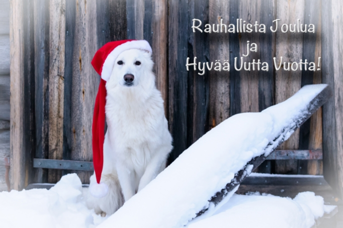
Marraskuu
27.11.
Rakas uskollinen Elsani. On tullut aika sanoa jäähyväiset, vaikka se tuntuukin särkevän sydämeni. Nyt sinun ei tarvitse tuntea enää koskaan kipua.
RIP Gentle Miracle's Be My Destiny
ELSA
19.05.2012 - 27.11.2020
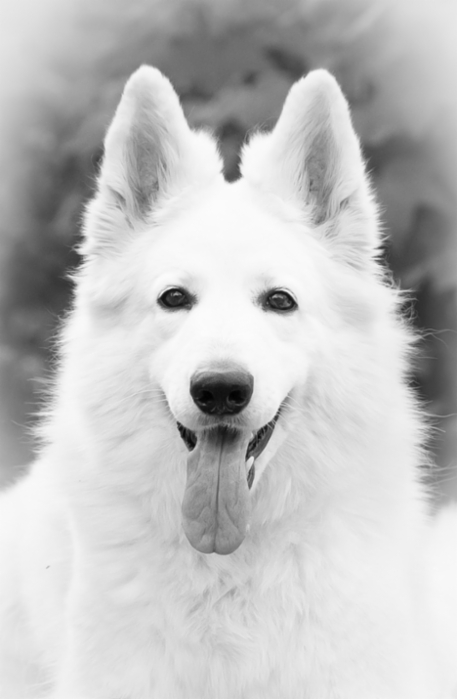
Älä anna surunkaan estää,
yritä minun vuokseni kestää
ystävyytemme raskain koetus,
jäähän meille rakkaus, luottamus,
joka kesti monta yhteistä vuotta.
Miksi pelkäämme tulevaa suotta?
Kärsimystä et minulle halua,
autathan pääsemään tuskasta.
Ymmärrän syvän surusi,
tuntuu lopulliselta lähtöni.
Älä silti ole lohduton,
menen sinne, missä hyvä on.
Pysythän luonani, vieressäin,
loppuun asti lähelläin.
Se teko on oikean ystävän,
rakastavan ja ymmärtävän.
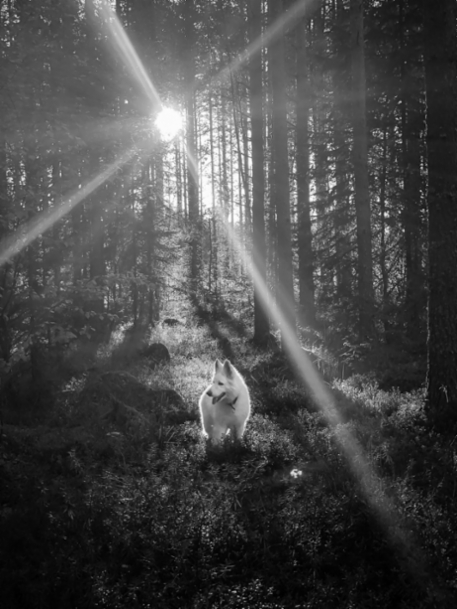
♥︎
Aurinko laskee
jo pitenee varjot
aika on eron ja jäähyväisten
poissa on ystävä kallehin...
♥︎
Suru ja ahdistus Elsan voinnista on ollut sydämessäni jo pitkään. Elsan molemmissa polvissa on ollut pitkälle edenneet nivelrikkomuutokset jo muutaman vuoden ajan, lisäksi selän spondyloosi on oireillut vaihtelevasti. 2019 kesällä vointi oli jo vaakalaudalla, mutta tehokkaalla ja jatkuvalla kipulääkityksellä ja Sansan mukanaan tuomalla elämänilolla sekä koirien yhteisellä metsäliikunnalla Elsa on jaksanut olla kohtuullisen oma itsensä tähän syksyyn asti. Kipunsa se on yrittänyt peittää parhaansa mukaan kuten koirat aina tekevät, mutta syksyn edetessä se on onnistunut Elsalta pikkuhiljaa yhä huonommin.
Tämä päätös, jota olen lykännyt mutta jonka nyt jouduin tekemään, tuntuu sydäntäsärkevältä. Ikävä on musertava. Lohdutuksenani on vain se, ettei Elsan tarvitse tuntea enää kipua. Ja haluan uskoa myös että nyt Elsa saa olla jälleen yhdessä rakkaan Nelli-äitinsä kanssa, siellä jossakin.
Kiitos Elsa näistä yhteisistä vuosista. ♥︎ Synnyit käytännössä käsiini kauniina kevätiltana, B-pentueen viimeisenä. Olin etukäteen päättänyt pitää yhden pennuista itselläni, ja sinut valitsin 3 päivän ikäisenä. Muistan vieläkin miten BioSensor-ohjelmaa aloittaessani nostin jokaisen pennun vuorollaan pystyasentoon käsissäni ja tarkastelin niitä. Beigen tytön vahva pää ja valtavan musta pigmentti kiinnittivät heti huomioni ja päätös oli tehty. Vuosien kuluessa kasvoit kauniiksi mutta kovin herkäksi koiraksi, tietynlainen nöyryys oli sinussa aina. Oma perhe olivat sinun koko elämäsi, alusta loppuun asti.
Hyvästi rakas Elsa, sinun tassunjälkesi ovat syvällä sydämessäni... ♥︎
Syyskuu
30.9.
Jälleen elämä näytti, miten äkkiä kaikki voikaan muuttua. Musertava suru-uutinen kertoi, että oli tullut aina niin iloisen Dieselin aika siirtyä koirien maahan sateenkaaren toiselle puolen.
RIP Gentle Miracle's Autumn Dream "DIESEL"
31.7.2009 - 30.9.2020
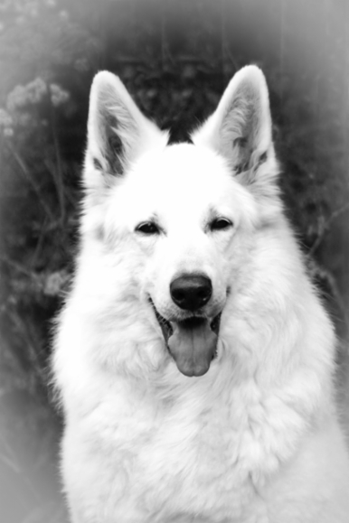
koiraenkelinä tästä maailmasta lähti.
Nyt saat juosta lailla tuulen
vihreillä niityillä ajattomuuden.
Tuskaa, kipua, surua ole ei,
uni lempeä sinut sateenkaarisillalle vei.
Hyvää matkaa pikkuinen,
täällä sinua ajattelen.”
Diesel oli yksi niistä kasvateistani, joiden pentuajan muistan jostain syystä erityisen hyvin. Reipas ja tarmokas Ruskea poika oli Nellin ensimmäisistä pennuista yksi sydämeen pienet tassunjälkensä tiukasti jättäneistä hurmureista. Tuntuu, kuin siitä olisi vain ohikiitävä hetki, kun se lähti luotamme Marin mukaan isoveli Darwinin kyljessä... Ja miten valtavan määrän ihania hetkiä olen saanut kasvattajana kokea Dieselin ja Marin hienojen saavutusten johdosta, niin näyttelykehissä kuin etsijäkoiratehtävissä. Mutta ehkä mieltä lämmittävintä on tässä hetkessä muistaa se, että vaikka upeat tulokset olivat suuria ilon aiheita, niin kaikkein tärkeintä Marille on aina ollut Dieselin hyvinvointi. Se, kuten kaikki muutkin Marin koirat, oli mitä rakastetuin perheenjäsen ihan omana itsenään.
Sydämestäni kiitän vielä sinua Mari siitä matkasta, jonka pieni Ruskea poika sai kanssasi kulkea, miten monessa touhussa olla mukana ja miten rakastettu perheenjäsen olla. Kiitos myös siitä, että minäkin sain kulkea tässä mukana koko tämän Dieselin elämän mittaisen matkan, niin iloineen kuin suruineen. Se merkitsee minulle kasvattajana valtavan paljon. ♥︎
Lämmin osanottoni koko Dieselin perheelle ♥︎
13.9.
Sansan ensimmäinen näyttelypäivä! Koronakevät ja -kesä ovat aiheuttaneet peruuntumisia kaiken muun ohella myös koiranäyttelyihin, ja nyt syksylläkin näyttelyjä on vain muutamia ja nekin joudutaan järjestämään erityisjärjestelyin. Tänään kuitenkin pääsimme osallistumaan Killerillä pidettyihin "kotikylän" ryhmänäyttelyihin ja mukana oli vielä velipoika Karpokin! Parissa match showssa ollaan Sansan kanssa käyty elokuussa näyttelyhommia harjoittelemassa, mutta sen kummemmin ei nyt oltu tähän debyyttiin valmistauduttu.
Tihkusateisellan ja kuraisella Killerillä valkkareita oli mukana 20 koiraa ja tuomarina toimi latvialainen Ligita Zake. Karpo (GM's Dude Has A Point) esiintyi kehän ensimmäisenä valkkarina junioriluokassa, esiintyi Pirjon kanssa kerrassaan upeasti ja oli lopulta mukana paras uros-kehässä! Lopputuloksena tänään hienosti JUN ERI/2, SA ja PU3! Onnea! ♡
Karpon arvostelu:

Karpo ja Pirjo kehässä 13.9.2020
Sansan vuoro tuli sitten junnunartuissa, ja olin ihan positiivisesti yllättynyt kuinka hyvin se malttoi esiintyä yksittäisarvostelussa. Sansalla on taas ollut vähän reippaammat otteet ja liikkeet etenkin väsyneenä viime aikoina (tarkoittaa hyppimistä, pomppimista ja käsien klohmimista... :-O) mutta tänään oli selkeästi hyvä päivä kunnes piti juosta kilpailuluokassa toisten perässä; siinä kohtaa maltti sitten meinasi loppua. ☺︎
Mutta kokonaisuudessaan olen hyvin tyytyväinen Sansaan, kylllä se vielä oppii! Tulos tänään oli JUN ERI/3 ja arvostelu tällainen:


Elokuu
15.8.
Karpo (GM's Dude Has A Point) osallistui ensimmäiseen viralliseen näyttelyynsä Kajaanin ryhmänäyttelyssä. Karpo ja Pirjo kävivät jo helmikuussa Tornion ryhmänäyttelyssä mutta silloin Karpon ikä ei riittänyt kuin epäviralliseen pentuluokkaan (PEK3), mutta nyt poika esiintyi junioriluokassa Irina Poletaevan toimiessa tuomarina. Tuloksena tänään hieno JUN ERI/2! Onnea hienosta debyytistä Pirjo ja Karpo! ♡
Tässä loistava arvostelu: erinomainen tyyppi, oikealinjainen, erinomainen sukupuolileima, kaunis pää ja ilme, oikea hampaisto ja pigmentti. Hyvä kaula ja ylälinja. Hännän pää voisi olla elastisempi ja suorempi. Hyvä rintakehä ikäisekseen, oikeat kulmaukset. Erinomainen liikkuja, hyvä karvanlaatu.
10.-16.8.
Sansa ensimmäinen ulkomaanmatka! Vietimme viikon asuntoautoilemassa Pohjois-Norjassa, pääkohteena Senjan saari. Kelit suosivat kaikkialla muualla paitsi Sanjalla, jossa ikävä kyllä satoi käytännössä koko ajan. Sansa pääsi mukaan nyt ainoana koirana Elsan jäädessä kotiin poikien kanssa, ja todella hyvin Sansa sopeutui camping-elämään ja asuntoautossa matkaamiseen.
Osan matkaa meillä oli seurana Sansan äiti Taika ja sisko Trick sekä Turbo perheineen omalla asuntoautollaan, ja pientä vaelluksenpoikastakin siinä sitten koirien kanssa tehtiin. Kiitos vielä seurasta Marjolle ja Jarkolle!
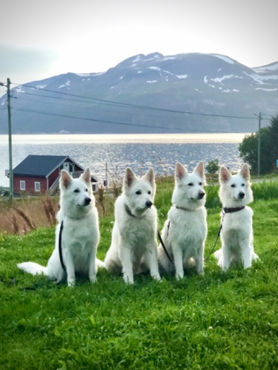
Sansa, Turbo, Taika ja Trick Svensbyssä
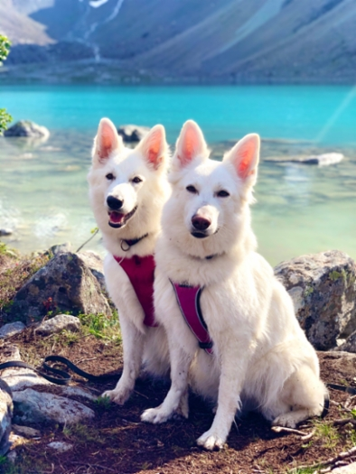
Sansa ja Taika-äiti Blåvatnetilla

Botnhamn
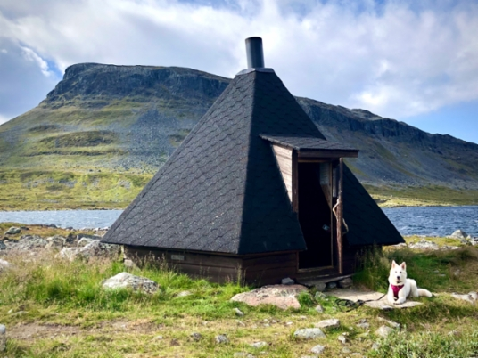
Kilpisjärvellä Saana taustalla
8.-9.8.
Vietimme todella helteistä viikonloppua D-pentujen yksivuotissynttäreiden merkeissä Matkailutila Surkeenjärvellä Korpilahdella. Kaikki viisi sankaria omistajineen olivat menossa mukana, iso kiitos aktiivisille omistajille! Viikonlopun aikana tehtiin pikkuisen jälkitreenejä ja koirat pääsivät myös uimaan, muuten aika kului lähinnä syödessä, saunoessa ja seurustellessa. Koirat tulivat vielä keskenään jotenkuten laumana toimeen, mutta vauhdin kiihtyessä ja tunteiden kuumentuessa meinasi jo hiukan syntyä pieniä kärhämiä... niin ne alkavat vaan nämäkin aikuistua ainakin siinä mielessä.
Paikka oli tällaiseen tapaamiseen aivan loistava ja omistajat olivat ajaneet meille hyvän pellon jäljestämiseen ja koirien juoksemiseen. Tässä kuvia viikonlopulta.
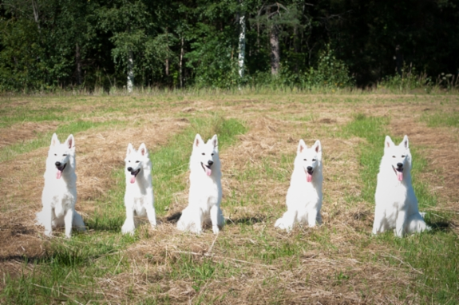
Karpo, Trick, Velho, Sansa ja Kajo
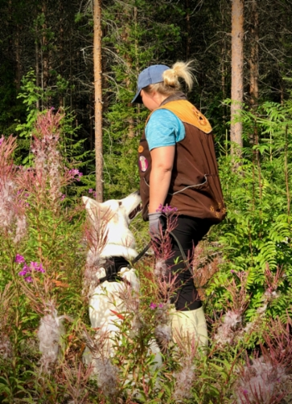
Karpo ja Pirjo lähdössä metsäjäljelle
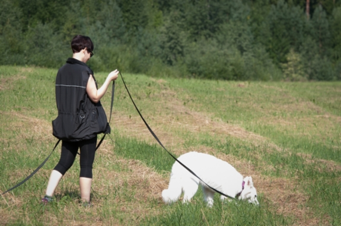
Trick ja Marjo jäljellä
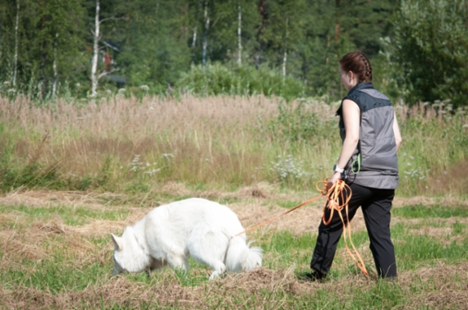
Kajo jäljestää, Heidi seuraa
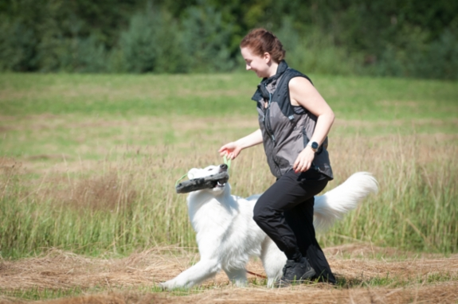
Palkka maistuu Kajolle
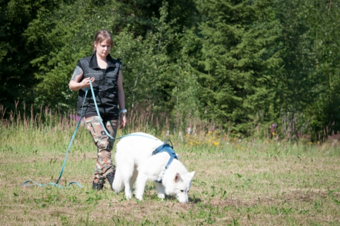
Velho ja Annika jäljen päällä
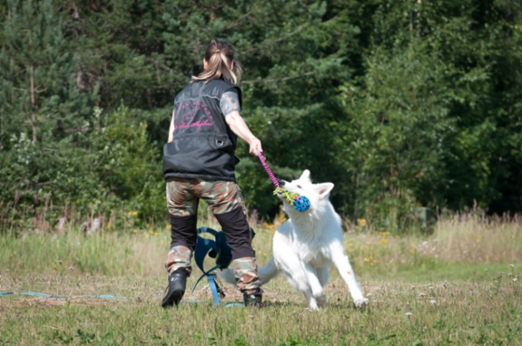
Velho saa palkkansa
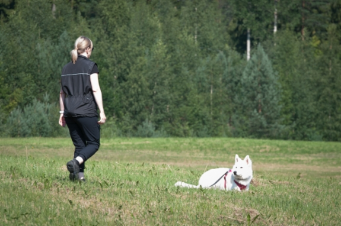
Sansa löysi kepin
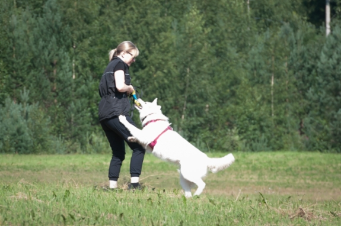
Sansakin sai palkkaleikit
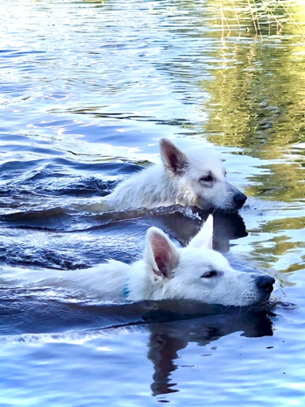
Sansa ja Karpo nauttivat uimisesta
Heinäkuu
31.7.
GM's A-lapset tänään 11 vuotta!
♥︎ ONNEA DIESEL JA TURBO ♥︎
11 vuotta sitten syntyivät Nellin ja Boniton pennut, jotka tekivät samalla minusta "kasvattajan". Miten ihania, mutta myös niin raastavia muistoja liittyykään tuohon aikaan, ja miten paljon uusia ystäviä ja kokemuksia olenkaan saanut noiden päivien jälkeen. Kovin surullista on, että enää vain kaksi näistä A-ryhmäläisistä on täällä 11-vuotissyntymäpäivää viettämässä, mutta sellaista elämä nyt vaan on... arvaamatonta.
Isot ja herkkuluun makuiset onnittelut Dieselille ja Turbolle; olkoon päivänne täynnä rapsutuksia! Ja Chaka, Nuka, Amor, Kamu ja Rene eivät unohdu koskaan. ♥︎
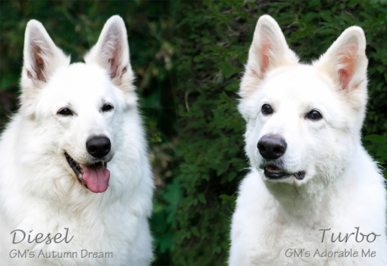
19.7.
Gentle Miracle's D-lapset täyttävät tänään vuoden!
Paljon onnea Taikan ja Chuckin lapset Kajo, Karpo, Trick, Velho ja tietenkin oma Sansani! Olette ihana porukka teini-ikäisiä vauhtivalkkareita! ♥︎ Ja kiitos omistajille aivan parhaista kodeista ja pitkästä pinnasta; tästä on hyvä jatkaa!

Aika todella rientää; vastahan oma pikkuinen Sansani loikki perässäni takametsään, räkytti ja hyökkäili pohkeisiini, pissaili pitkin lattioita ja puri terävillä naskalihampaillaan sormet verille. Ja nyt 1-vuotias neiti osaa jo vaikka mitä ja käytöstavatkin alkavat pikkuhiljaa löytyä, joskin edelleen joissakin asioissa on hiukan toivomisen varaa ja edelleen harjoiteltavaa... mutta sitähän se elämä on, ikuista oppimista!
Sansa (GM's Daring Queen of Fantasy) 1 vuotta
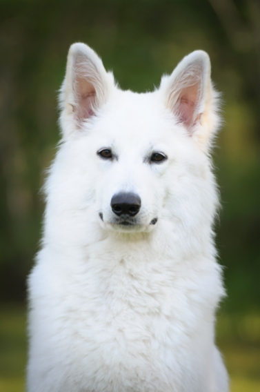
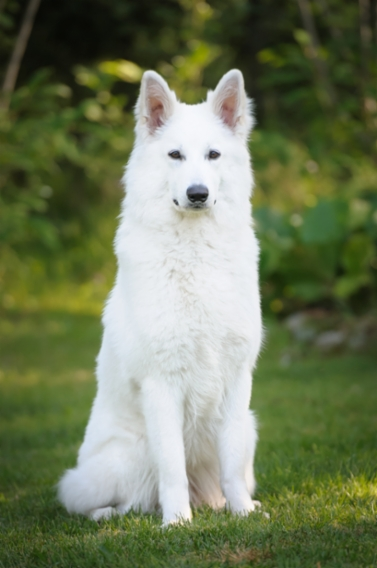
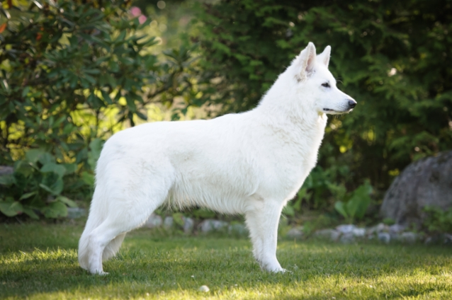
Kesäkuu
19.6. Konnevesi
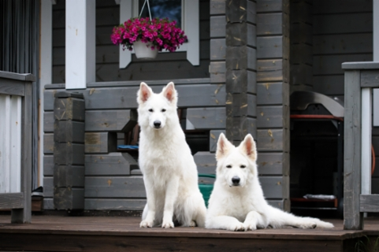
HYVÄÄ JUHANNUSTA KONNEVEDELTÄ!
Koska tänä vuonna suositaan kotimaan matkailua (koska korona), vietimme mekin ihanat kaksi lomaviikkoa Konnevedellä mökkeillen. Säät suosivat aivan uskomattoman hyvin ja saimme nauttia lämmöstä ja auringosta koko mökkilomamme ajan! Aivan uskomatonta!
Sansalle tarjoutui vihdoin tilaisuus opetella uimaan, ja ensimmäisen uintipäivän haparoinnin ja polskuttelun jälkeen tyttö innostuikin uimisesta oikein kunnolla! Ja lopulta harjoiteltiin jo kunnon uimahyppyjä! Myös Elsa pääsi uimaan kunhan ensin ajeltiin hamppuuntunut turkki pois.
Tässä vielä hiukan koirien lomatunnelmia kuvien muodossa.
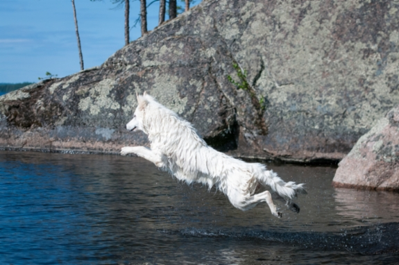
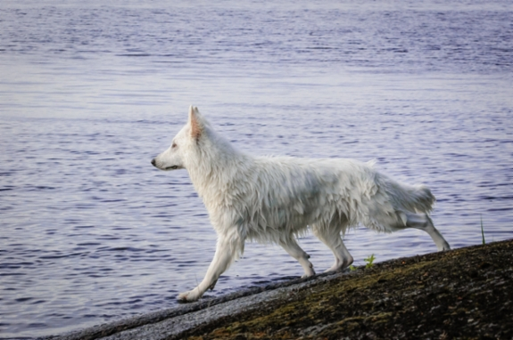
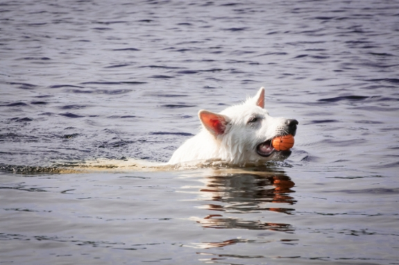
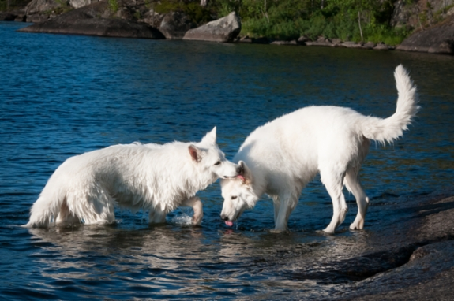
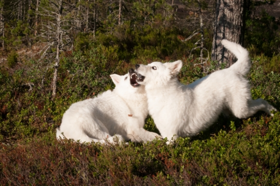
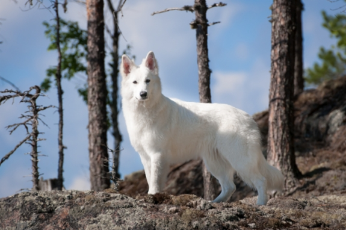
Toukokuu
19.5.

Tänään herkuteltiin Elsan syntymäpäivän kunniaksi; veteraani-ikä eli 8 vuotta tuli täyteen! Viime syksynä Elsan jalat olivat siinä kunnossa, että että olin jo varma ettei talvea tulla enää yhdessä selviämään. Vaan niinpä vaan edelleen Elsa kirmaa Sansan perässä pitkin metsiä... tosin päivittäisen jatkuvan kipulääkityksen turvin. Elsan molemmissa polvissa on niin pitkälle edennyt nivelrikko, että jos koiran tilannetta pitäisi arvioida pelkkien röntgenkuvien perusteella, niin sanoisin että tuo koira ei enää metsissä juokse. No, tärkeintä on kuitenkin vointi, ja tällä hetkellä Elsa on kovinkin iloinen ja pirteä tuore veteraani. Olen kuitenkin päättänyt, että koira saa juosta aika lailla mielensä mukaan niin kauan kuin se onnistuu, eli elellään näin päivä kerrallaan.
Valitettavan moni B-pennuista on jo siirtynyt sateenkaarisillalle, ja tänään olen muistellut myös niitä. Diesel, Fiina, Manna ja Senna ♥︎ olette muistoissani!
9.5.
Miten hetkessä kaikki voikaan muuttua, miten hiuksenhieno lanka onkaan tämä elämä? Tänään nukkui pois Nellin ensimmäisestä pentueesta ihana, kaunis Nuka, Piian ja Janin silmäterä ja C-pentujeni äiti.
RIP Gentle Miracle's August Fantasy "NUKA"
31.7.2009 - 9.5.2020
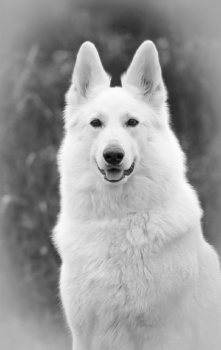
Jos niin käy, että minusta tulee hauras ja heikko
ja kivut häiritsevät untani,
niin sinun on tehtävä mitä on tehtävä
sillä viimeistä matkaa ei kukaan ole estävä.
Sinä tulet surulliseksi - minä ymmärrän.
Älä anna surusi estää sinua,
sillä tänä päivänä, enemmän kuin koskaan ennen,
rakkautesi ja ystävyytesi punnitaan.
Meillä on ollut niin monta hyvää vuotta.
Et haluaisi minun kärsivän,
kun aika koittaa, anna minun mennä.
Vie minut sinne missä he auttavat minua,
mutta pysy luonani loppuun asti.
Ja pidä minua lujasti ja puhu minulle,
kunnes silmäni ovat sulkeutuneet.
Tiedän, että aikanaan sinäkin huomaat,
se on ystävyyttä, jota minulle osoitat.
Älä sure sitä että sen täytyy olla sinä
jonka täytyy tehdä päätös.
Olemme olleet niin läheisiä - me kaksi näinä vuosina.
Saanko lähteä nyt?
Luuletko, että hetki on oikea?
Olen elämänpolkuni kulkenut ja parhaani tehnyt.
Saanko siis astua toiselle puolen
ja vapaaksi päästä?
Aluksi en tahtonut lähteä,
taistelin kaikin voimin.
Mutta nyt jokin tuntuu kutsuvan minua
kohti lämmintä ja elävää valoa.
Tahdon lähteä.
Tahdon todella.
On vaikeaa jäädä.
Parhaani yritän ja koitan hetken tässä olla,
niin sinä saat minusta vielä kerran huolehtia
ja minä kokea suuren suurta rakkautta.
Tiedän, olet surullinen ja sinua pelottaa,
sillä tunnen kyyneleesi, jotka turkkini kostuttaa.
En ole kaukana.
Kiitos että olet minua rakastanut.
Tiedäthän, että minäkin rakastan sinua.
Siksi on niin vaikea sanoa hyvästi
ja päättää tämä elämä luonasi.
Joten pidä minua lähelläsi vielä kerran,
ja sano sanat, jotka toiveeni ois,
koska välität minusta tuhannen verran,
annat minun nukkua pois.
Nukalla todettiin tänään viikon ruokahaluttomuuden ja väsymyksen jälkeen vuotava pernakasvain ja sen vointi hiipui nopeasti. Suuri suru tuli lähes varoittamatta, ja oli aika päästää Nuka Nelli-äidin luokse. ♥︎
Olen niin valtavan pahoillani puolestanne Piia ja Jani, ja samalla kiitän sydämestäni kaikesta mitä Nuka kanssanne sai kokea. Tiedän, ettei koira voi enempää rakkautta, huolenpitoa ja hoivaa saada.
Nuka oli myös minulle erityisen tärkeä koira C-pentujeni loistavana äitinä ja Sansan mummona. Nuka myös muistutti kaikista Nellin pennuista eniten äitiään...
Hyvää matkaa kaunis Nuka, ja lämmin osanottoni Piia ja Jani! Ja rapsutukseni myös äidistään nyt luopumaan joutuneelle Milalle. ♥︎
Huhtikuu
19.4.
Sansa ja muut D-pennut täyttivät tänään 9 kuukautta, eli pentuaika alkaa olla ohi ja nuoriso on saavuttanut "virallisen" juniori-iän! Samalla olisi nyt portit auki virallisiin näyttelyihin, mutta nyt koronapandemian aikana näyttelykesä tai taitaa jäädä kokonaan väliin, ellei sitten koko loppuvuosi vietetä ilman suurempia tapahtumia.
Alla muutama kuva Sansasta junnuiän kynnyksellä tänään.
Kuvat © Lassi Alanen
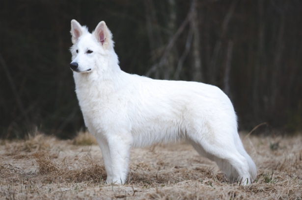
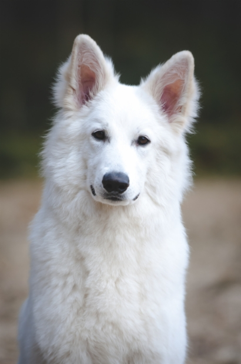
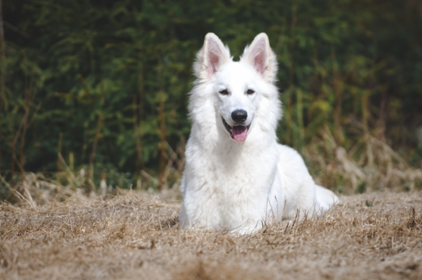


10.4.
Paljon onnea ihanat C-pennut Taika, Mila, Karkki, Lumi, Gizmo, Kelmi, Koda, Konsta ja Roki!
Maaliskuu
22.3.
RIP Gentle Miracle's Best of Luck "DIESEL"
19.5.2012 - 20.3.2020

Tänään on se päivä,
kun minun matkani on kuljettu loppuun.
Olen sairas ja voimani ovat ehtyneet,
älä siis pyydä minua jaksamaan pidemmälle,
vaan pidä minua sylissäsi
ja kerro minulle kaikista yhteisistä vuosistamme.
Silitä turkkiani niin kauan
kunnes olen kulkenut rajan yli
ja sydämeni on sammunut.
Muistele minua
mutta älä takerru minuun,
vaan jatka eteenpäin.
Kun aika koittaa,
kohtaamme jälleen,
emmekä eroa enää koskaan.
Diesel sairastui syksyllä 2019 ja sai loppuvuodesta diagnoosin; vasemmasta takajalasta löytyi kasvain. Sitä ei voitu poistaa kirurgisesti ja lopulta oli pakko todeta, etteivät lääkkeet enää auttaneet riittävästi Dieselin kipuihin vaan oli raskaan päätöksen aika.
Olen niin pahoillani, Niina ja Henri. ♥︎ Tiedän, että Dieselin hyväksi tehtiin kaikki mahdollinen, kunnes oli aika luovuttaa. Kiitos vielä kerran rakastavasta kodista, jonka aikanaan annoitte pienelle Vihreälle pojalle, ja kiitos kaikista näistä vuosista, joiden aikana Diesel oli tärkeä osa teidän arkeanne ja jätti tassunjälkensä teidä sydämiinne.
Hyvää matkaa Diesel, kerro Nelli-äidille terveisiä...
Helmikuu
23.2.

Karpo (GM's Dude Has A Point) osallistui tänään pentuluokkaan Tornion ryhmänäyttelyssä. Tuomarina siellä toimi Rita Kadike-Skadina Latviasta. Nuoriherra käyttäytyi hyvin ja esiintyi hienosti, mutta tuomarin mielestä Karpo oli vielä kakara ja turhan hoikassa kunnossa. No, kasvava nuorimies saa ollakin kyllä mieluummin hoikka kuin paksu...
Tuloksena oli PEK3, arvostelu tällainen:
"7 kk ikäinen pentu, joka saisi olla vankemmassa kunnossa. Rintakehä, kyljet ja selkä pitäisi olla vahvemmat. Selkäranka tuntuu liian selvästi. Oikeat kulmaukset, selkälinja ja häntä. Ahdas takaa. Lupaava."
Ihana Karpo-mies! ♥︎ Hienosti esiinnytty, onnea Pirjo ja Karpo!
22.2.
Hyvää syntymäpäivää Nelli, sinne jonnekin! Olet mielessäni lähes joka päivä... Ikävä on edelleen valtava ♥︎

8.-9.2.
Vietimme porukalla D-pentujen puolivuotistapaamista Saarijärvellä Jakolan Rentolassa; kaikki viisi teini-ikäistä koiralasta oli paikalla! Paikalla oli myös Taika-äiti, joka jatkoi edelleen hyvän äidin rooliaan leikkimällä ja juoksemalla lastensa kanssa. ♥︎ Oli todella ihanaa nähdä miten jokainen pentu oli kehittynyt ja kasvanut omanlaisekseen persoonaksi, mutta myös havaita että jokaisesta edelleen löytyi paljon piirteitä, jotka olivat niissä jo ennen luovutusikää. Aivan ihania koiralapsia!
Pennut saivat juosta pitkin pihoja porukalla, ja sisällä tuvassa meno jatkui pimeän tultua pieninä paininvääntöinä yllättävänkin sopuisasti. Taisi olla jo iltamyöhä ennenkuin tuli hetki, jolloin kaikki makasivat kaikkensa antaneina pitkin tuvan lattioita. Muuten tapaaminen sisälsi arvatenkin koirien kuvaamista, herkkujen syömistä, saunomista ja seurustelua. Vaikka osalla porukasta matka treffeille oli todella pitkä, olen niin iloinen ja kiitollinen että KAIKKI tulivat paikalle ja saatiin vaihtaa kuulumisia ja tutustua vielä paremmin toisiimme. Olette huippuporukkaa ja tehneet jokainen niin hienoa työtä pentujen kanssa!

Kajo, Sansa, Velho, Trick ja Karpo


Karpo, Velho, Trick, Taika-äiti, Kajo ja Sansa
Tammikuu
19.1.
Kuinka nopeasti viikot ja kuukaudet kuluvatkaan! Vuosikymmen on vaihtunut ja meidän pikkuinen karvapallo Sansa on kasvanut pitkäkoipiseksi teinitytöksi. Tänään Sansa ja muut D-pennut täyttävät jo puoli vuotta!
Paljon onnea puolivuotiaille D-pennuille!